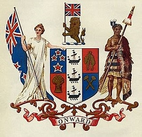

Growing numbers of British migrants arrived in New Zealand in the late 1830s, and there were plans for extensive settlement. Around this time there were large-scale land transactions with Māori, unruly behaviour by some settlers and signs that the French were interested in annexing New Zealand. The British government was initially unwilling to act, but it eventually realised that annexing the country could protect Māori, regulate British subjects and secure commercial interests.Lieutenant-Governor William Hobson had the task of securing British sovereignty over New Zealand. He relied on the advice and support of, among others, James Busby, the British Resident in New Zealand. The Treaty was prepared in just a few days. Missionary Henry Williams and his son Edward translated the English draft into Māori overnight on 4 February. About 500 Māori debated the document for a day and a night before it was signed on 6 February.
English version of treatyWaikato–Manukau Treaty copy (English) The Treaty is a broad statement of principles on which the British and Māori made a political compact to found a nation state and build a government in New Zealand. The document has three articles. In the English version, Māori cede the sovereignty of New Zealand to Britain; Māori give the Crown an exclusive right to buy lands they wish to sell, and, in return, are guaranteed full rights of ownership of their lands, forests, fisheries and other possessions; and Māori are given the rights and privileges of British subjects.